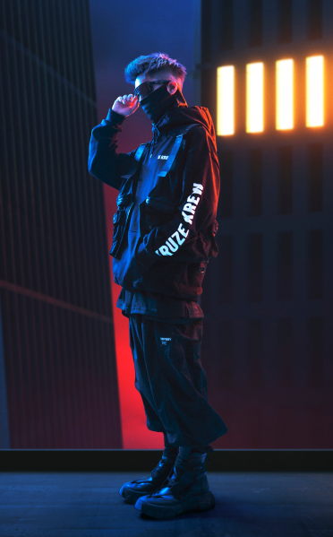
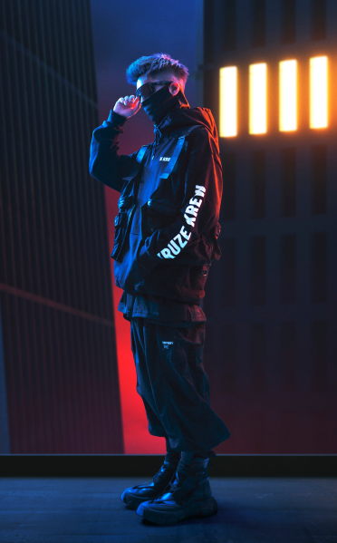

KRUZER X IONISM
Asymtomatic 帶原者系列
揮別以往休閒運動、寬鬆舒適、美式街頭，
以上都是我們要顛覆的傳統形象，朝未來科技趨勢發展。
KRUZER帶領推出 Asymptomatic 帶原者系列的電動滑板與服飾，創造出適應各種天氣、各種功能，所以我們找了機能工裝設計師品牌Tranzend頂規的機能布料與製程，加上Ionism的設計理念，結合科技、機能與美學，並持續致力於對環境友善的製程，為每位使用者提供舒適感以及適應不同環境的能力。並且具備未來與時尚結合我們KRUZER的獨有的未來感風格。
＃慢時尚 ＃永續意識 ＃機能時裝 ＃科技服飾
以上都是我們要顛覆的傳統形象，朝未來科技趨勢發展。
KRUZER帶領推出 Asymptomatic 帶原者系列的電動滑板與服飾，創造出適應各種天氣、各種功能，所以我們找了機能工裝設計師品牌Tranzend頂規的機能布料與製程，加上Ionism的設計理念，結合科技、機能與美學，並持續致力於對環境友善的製程，為每位使用者提供舒適感以及適應不同環境的能力。並且具備未來與時尚結合我們KRUZER的獨有的未來感風格。
＃慢時尚 ＃永續意識 ＃機能時裝 ＃科技服飾

 
